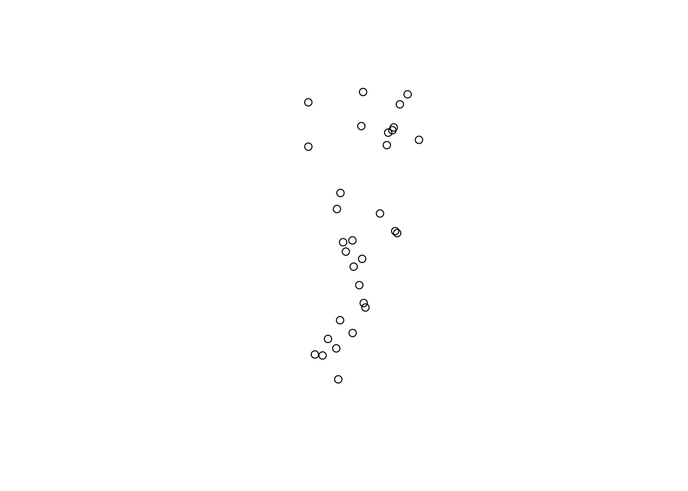
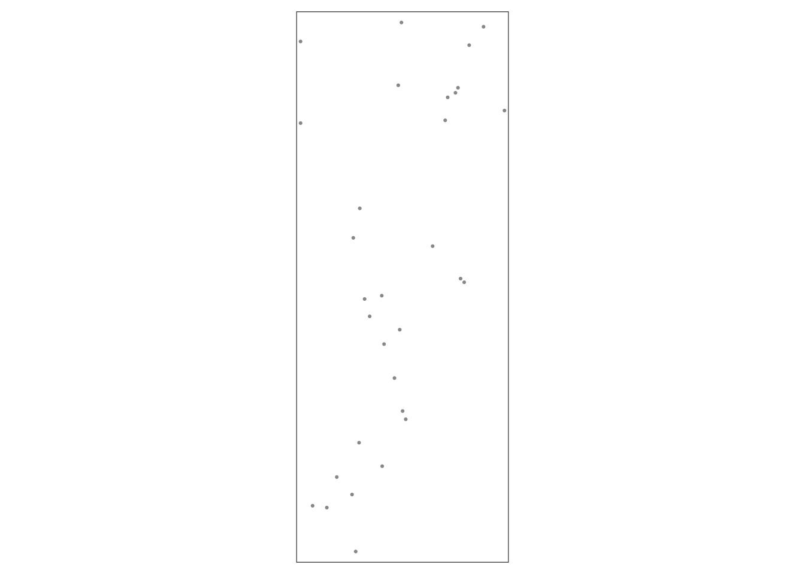
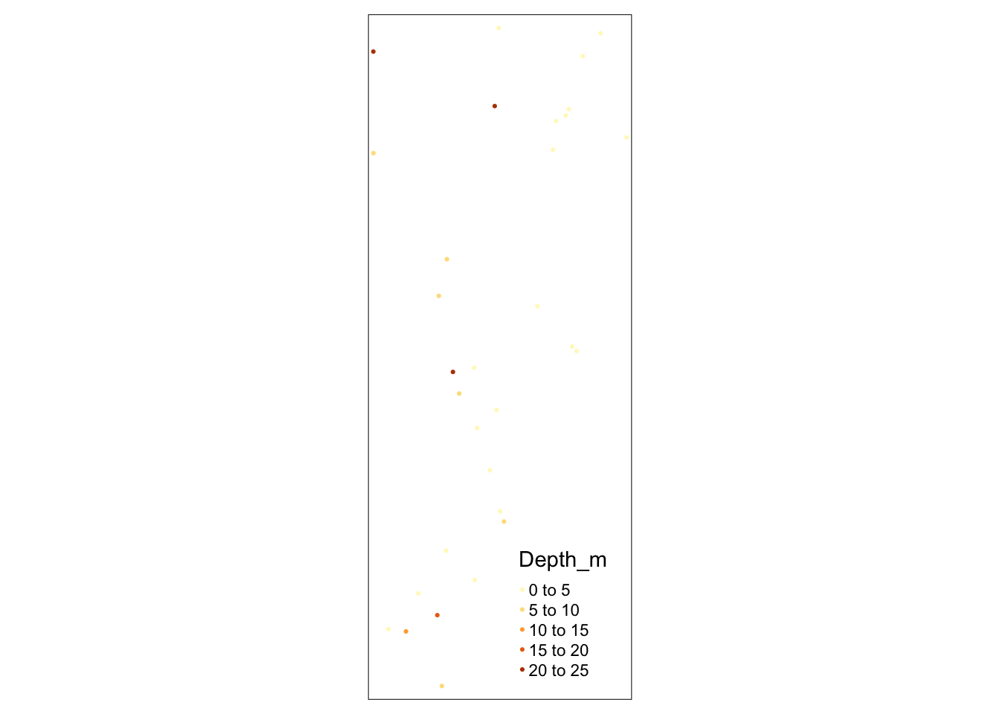
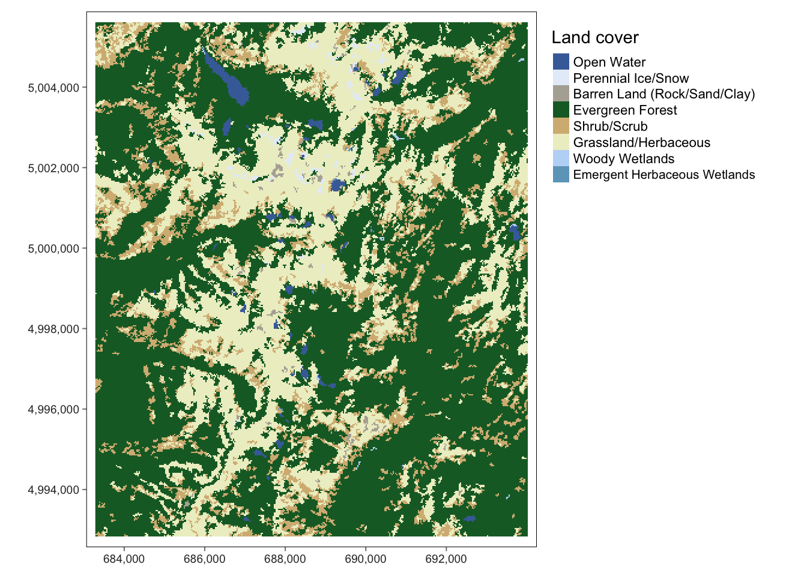

5.5 Bonus: ‘sf’ and ‘terra’
Helene Wagner
1. Overview
This bonus vignette uses the new packages sf, terra, and tmap, yet it can only scratch the surface. For a thorough introduction to geocomputation with R, see this excellent Gitbook: https://geocompr.robinlovelace.net/index.html.
a. Goals
This bonus material expands the Worked Example to show:
- How to convert the site data from an
spobject to ansfobject, a new standard for geospatial vector data. - How to create static and interactive maps of an
sfobject withtmap. - How to export an
sfobject to a, ESRI shapefile. - How to plot a categorical raster map with a predefined color scheme, using
tmapand a new standard for raster data (terrapackage).
Try modifying the code to import your own data!
2. Convert ‘SpatialPointsDataFrame’ to ‘sf’ object
While ‘sp’ was a major achievement, it is being replaced now by ‘sf,’ which is short for “simple feature.” The conversion is easy. The resulting S3 object is a data frame and also an ‘sf’ object.
data(ralu.site)
Sites.sf <- st_as_sf(ralu.site)
class(Sites.sf)## [1] "sf" "data.frame"Check whether the projection has been defined:
sf::st_crs(Sites.sf)$input## [1] "+proj=utm +zone=11 +ellps=GRS80 +towgs84=0,0,0,0,0,0,0 +units=m +no_defs"3. Plot variables (first 10 in data set)
a. Plot geometry
The package sf makes a clear distinction between the geometry information (spatial coordinates: where in space) and attribute information (what’s at these locations). Hence, when using the function plot with sf objects, we need to decide what we want to plot: geometry or attributes?
To plot the geometry, we use function st_geometry to extract the geometry information from the sf object:
plot(st_geometry(Sites.sf))
b. Plot attributes in space
If we don’t extract the geometry, then R will assume that we want to plot attribute data. The default is to plot the first ten attributes.
Here we set the point character pch to a filled circle, which is symbol #16. With cex=2, we define the symbol size.
For an overview of ‘pch’ symbol numbers, and colors, check: http://vis.supstat.com/2013/04/plotting-symbols-and-color-palettes/
par(mar=c(2,2,2,2))
plot(Sites.sf, pch=16, cex=2)## Warning: plotting the first 10 out of 17 attributes; use max.plot = 17 to plot
## all
This is pretty cool! Let’s have a closer look at two of the variables.
Basin(left): this is a factor, and each factor level is assigned a different color.Depth_m(right): this is a quantitative variable, and R automatically uses a color ramp (from blue to pink to orange) to indicate variation in the values.
Note: To learn about options for the ‘plot’ function for ‘sf’ objects, access the help file by typing ‘?plot’ and select ‘Plot sf object.’
plot(Sites.sf[,c("Basin", "Depth_m")], pch=16)c. Create a static bubble plot with ‘tmap’
The tmap package (for plotting thematic maps) is a great new tool for plotting maps. It is based on the grammar of graphics concepts, which take a bit of getting used to. Most importantly, we need the following parts:
tmap_mode("plot"): to plot a static map (default)tm_shape: this function defines the data to be used.tm_sf: this function defines what information should be plotted and how.
Note: for the second part, there are many other functions for various types of data.
If we use tm_sf without arguments (i.e., with the default settings), we get a plot of the geometry:
tmap_mode("plot")
tm_shape(Sites.sf) + tm_sf()
We can indicate an attribute to plot it:
tmap_mode("plot")
tm_shape(Sites.sf) + tm_sf("Depth_m") 
Let’s make the boundary box (map extent) a little larger so that the symbols are not cut off. First we extract the boundary box of Sites.sf and save it as Bbox.
Bbox = st_bbox(Sites.sf)
Bbox## xmin ymin xmax ymax
## 686908.5 4994089.3 690890.1 5004435.0Then we define the range along x and y coordinates (delta.x, delta.y), set a zoom factor (Zoom) and add that fraction of the range on each side. Unfortunately, there is no dedicated function for this so we do this manually:
delta.x <- Bbox[3] - Bbox[1]
delta.y <- Bbox[4] - Bbox[2]
Zoom <- 0.1
Bbox2 <- Bbox + c(-delta.x, -delta.y, delta.x, delta.y) * Zoom
Bbox2## xmin ymin xmax ymax
## 686510.4 4993054.7 691288.2 5005469.6Now we add the boundary box information as an argument bbox in function tm_shape.
To create a bubble plot, we indicate that the attribute Depth_m should be used to define the symbol size.
Note that we write the figure into an object, Map1, then plot the Map1. This will help e.g. with exporting the map, or we can later add more layers to this map object with +.
tmap_mode("plot")
Map1 <- tm_shape(Sites.sf, bbox=Bbox2) + tm_sf(size = "Depth_m")
Map1
d. Create an interactive bubble plot with ‘tmap’
This is not a great plot yet. Let’s tweak it a bit:
tmap_mode(“view”): create an interactive map with a zoomable background map
size="Depth_m": create a bubble plot where the symbol size is proportional to the value of a quantitative variablecol="Basin": use a default color ramp to show different values, here for the categorical variable Basin.tm_basemap(server = "OpenTopoMap"): define what basemap should be used from internet.
If you omit tm_basemap(server = "OpenTopoMap"), R will show “Esri.WorldGrayCanvas” and include an interactive menu to toggle between “Esri.WorldGrayCanvas,” “OpenStreetMap,” and “Esri.WorldTopoMap.”
Uncomment the code below by removing the hashtag (#) and run it. Go ahead and play with the interactive map!
#tmap_mode("view")
#tm_shape(Sites.sf) + tm_sf(size="Depth_m", col="Depth_m", palette = "Blues") Let’s make a few more changes:
- We change the symbolization to fixed-size, filled circles with a black border, and plot them on top of filled circles that indicate the basin. Note that although both attributes are in the same dataset
Sites.sf, we need to include a data statement for each attribute we add to the map (i.e., map layer), usingtm_shape(Sites.sf). - We include the argument
bbox=Bbox2for at least one of the map layers. This is not needed for the interactive map but will look better when exporting it as a static map. - We add a call to function
tm_basemap, so that we can modify the list of the available basemap options. The first one listed in the argumentserverwill be shown by default.
Uncomment the code below by removing the hashtag (#) and run it. Go ahead and toggle between the base maps in the map below! Different base maps are suitable for different situations (data type, symbol type, size of study area) and purposes.
#tmap_mode("view")
#Map2 <- tm_shape(Sites.sf, bbox=Bbox2) + tm_sf("Basin", size=2, border.col="black") +
# tm_shape(Sites.sf) + tm_sf(size=0.8, col="Depth_m",
# palette = "Blues", border.col="black") +
# tm_basemap(server = c("Esri.WorldTopoMap", "Esri.WorldGrayCanvas",
# "OpenStreetMap", "OpenTopoMap",
# leaflet::providers$Stamen.Terrain,
# leaflet::providers$Stamen.Watercolor,
# leaflet::providers$Stamen.TonerLite))
#Map2e. Export maps
Save the map to folder output:
- Interactive map saved to
htmlfile. This includes all the features of the interactive mapMap2. - Static map saved to
pngfile, with height = 7 inches. This drops the base map and retains only the symbolized data.
Go ahead and check out the two files!
tmap_save(Map1, paste0(here::here(), "/output/StaticMap.png"), height=7)## Map saved to /Users/hhwagner1/Desktop/R_GitHub_Projects/LandGenCourse_book/output/StaticMap.png## Resolution: 808.1867 by 2100 pixels## Size: 2.693956 by 7 inches (300 dpi)#tmap_save(Map2, paste0(here::here(), "/output/InteractiveMap.html"))4. Export site data as ESRI shapefile
To export your results to GIS software, you can write them into an ESRI shapefile, which is a widely used data format for sharing geospatial vector data.
The following code may produce a warning that column names were abbreviated. It writes the component files for the ESRI shapefile into the pre-existing folder output (the first line will create it if does not exist yet). Remember to remove the hashtags ‘#’ to uncomment the code before running it.
The argument delete_dsn specifies whether any existing file with the same name should be deleted first (i.e., overwritten).
#require(here)
#if(!dir.exists(paste0(here(),"/output"))) dir.create(paste0(here(),"/output"))
#st_write(Sites.sf, paste0(here(),"/output/Sites.shp"), delete_dsn = TRUE)5. Use ‘terra’ and ‘tmap’ to display categorical map with color scheme
Now to a more tricky topic. Recall that the last raster layer in the Worked Example, nlcd, contains categorical land cover data that are coded numerically. The raster package actually misinterpreted them as numeric data.
Similarly to sp being replaced by sf, raster is being replaced by terra. The conversion is easy, using the function rast.
Let’s again extract the categorical raster layer into a new object ‘NLCD.’
- The function
rastof packageterraconverts arasterobject (packageraster) to aSpatRasterobject (packageterra). - We can use
as.factorto tell R that this is a categorical raster layer.
Here, we import the raster both as numeric and as categorical raster (factor).
NLCD <- raster(rasters[6])
NLCD.num <- terra::rast(NLCD)
NLCD.cat <- terra::as.factor(terra::rast(NLCD))The underlying code in package terra for creating categorical rasters seems to have changed lately. Here we will use a work-around based on the numeric map, NLCD.num. Check back later for an update.
What values occur in the raster? These are codes for cover types.
Here is a description of the cover types: https://www.mrlc.gov/data/legends/national-land-cover-database-2019-nlcd2019-legend
sort(unique(values(NLCD.num)))## [1] 11 12 31 42 52 71 90 95We will import a table with predefined colors (using hex color code) from the file Colortable_LULC.csv that is included with LandGenCourse.
This list has more entries (e.g., 21-24) than we need, because not all US land cover classes occur in the study area.
Check in the table below that the colors and cover types are stored as ‘character.’ (Luckily, since R 4.0, this is the new default for function read.csv). If they were coded as factors that could lead to errors later on.
ColTab <- read.csv(system.file("extdata", "Colortable_LULC.csv",
package = "LandGenCourse"), header=TRUE)
ColTab## value color attribute
## 1 11 #456DA8 Open Water
## 2 12 #E6EEF9 Perennial Ice/Snow
## 3 21 #E1CBCD Developed, Open Space
## 4 22 #DC9786 Developed, Low Intensity
## 5 23 #F40100 Developed, Medium Intensity
## 6 24 #B00206 Developed, High Intensity
## 7 31 #B2AEA3 Barren Land (Rock/Sand/Clay)
## 8 41 #6BA95C Deciduous Forest
## 9 42 #16692E Evergreen Forest
## 10 43 #B9CA8F Mixed Forest
## 11 51 #AD9439 Dwarf Scrub
## 12 52 #D5B883 Shrub/Scrub
## 13 71 #EDEFCA Grassland/Herbaceous
## 14 72 #D3D27C Sedge/Herbaceous
## 15 73 #A5CD53 Lichens
## 16 74 #88B8A1 Moss
## 17 81 #DED73E Pasture/Hay
## 18 82 #AD722C Cultivated Crops
## 19 90 #BED8F6 Woody Wetlands
## 20 95 #6EA5C4 Emergent Herbaceous WetlandsWe merge this list with the list of values in NLCD.num to create a raster attribute table (RAT). An RAT is a table that contains attributes for each distinct value in a raster.
tmp <- data.frame(nlcd=sort(unique(values(NLCD.num))))
RAT <- merge(tmp, ColTab,
by.x="nlcd", by.y="value", all.x=TRUE, sort=TRUE)
RAT## nlcd color attribute
## 1 11 #456DA8 Open Water
## 2 12 #E6EEF9 Perennial Ice/Snow
## 3 31 #B2AEA3 Barren Land (Rock/Sand/Clay)
## 4 42 #16692E Evergreen Forest
## 5 52 #D5B883 Shrub/Scrub
## 6 71 #EDEFCA Grassland/Herbaceous
## 7 90 #BED8F6 Woody Wetlands
## 8 95 #6EA5C4 Emergent Herbaceous WetlandsNow we can use tmp to plot the map with the predifined color palette
- We first define the dataset with
tm_shape - With
tm_raster, we telltmapthat we want to plot raster valuesstyle="cat"tellstmapto interpret values as categoriespalettedefines the colorslabelsdefines the labels to be used for the categoriestitledefines the legend caption for the categories
- With tm_layout, we tell tmap where to place the legend (outside to the right of map)
- With
tm_grid(lines=FALSE)we telltmapto show the coordinates along x and y axes but to suppress grid lines that would be drawn on top of the map (change it to TRUE to see the effect)
Map3 <- tm_shape(NLCD.num) +
tm_raster(style="cat", palette=RAT$color, labels=RAT$attribute,
title="Land cover") +
tm_layout(legend.outside=TRUE, legend.outside.position="right") +
tm_grid(lines=FALSE)
Map3## Some legend labels were too wide. These labels have been resized to 0.65. Increase legend.width (argument of tm_layout) to make the legend wider and therefore the labels larger.
Let’s beef it up a bit. We can do so by adding layers to Map3:
- To add an additional layer with the sampling sites to the map, we define the data for the layer with
tm_shape. - We define how the points should be symbolized with
tm_symbols. - We add a North arrow with
tm_compass, using default settings. - We add a scale bar with
tm_scale_barand set the background to a semitransparent (bg.alpha=0.5) light gray (bg.color="lightgray").
Map4 <- Map3 + tm_shape(Sites.sf) +
tm_symbols(size=0.4, col="yellow", border.col="red") +
tm_compass() + tm_scale_bar(bg.color="lightgray", bg.alpha=0.5)
Map4## Some legend labels were too wide. These labels have been resized to 0.65. Increase legend.width (argument of tm_layout) to make the legend wider and therefore the labels larger.
This time, we’ll export the map to a PDF file.
tmap_save(Map4, paste0(here::here(), "/output/RasterMap.pdf"), height=6, width=8)## Map saved to /Users/hhwagner1/Desktop/R_GitHub_Projects/LandGenCourse_book/output/RasterMap.pdf## Size: 8 by 6 inches